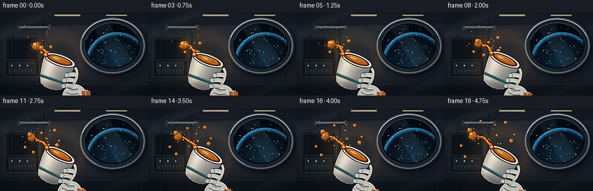
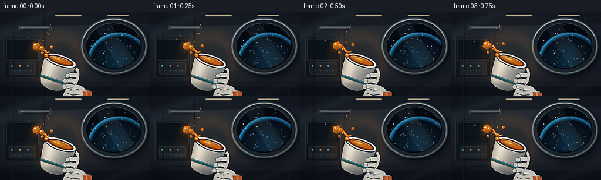

CODING AGENTS AS PIXEL WORLD MODELS
traex/DeepSeek-V4.1-Flash · mechanics_0003
点击播放 · 原生 RGB 像素
逐轮保存的候选
回放视频、检查图与代码变化。
每份候选均可单独播放。实际图片检查记录在下方工具轨迹中。
候选 01播放与检查图
点击播放 · 原生 RGB 像素


展开代码变化
--- 上一保存版本
+++ 本次保存版本
@@ -0,0 +1,711 @@
+from __future__ import annotations
+
+import math
+from pathlib import Path
+
+import numpy as np
+from PIL import Image, ImageDraw, ImageFilter
+
+import artifact_io
+
+
+W, H = 256, 144
+SS = 3
+RW, RH = W * SS, H * SS
+FRAMES = 20
+FPS = 4.0
+SEED = 1307
+
+CASE_DIR = Path(__file__).resolve().parent
+
+
+def smoothstep(value: float) -> float:
+ value = max(0.0, min(1.0, value))
+ return value * value * (3.0 - 2.0 * value)
+
+
+def rgba_image() -> Image.Image:
+ return Image.new("RGBA", (RW, RH), (0, 0, 0, 0))
+
+
+def add_noise(array: np.ndarray, rng: np.random.Generator, amount: float) -> np.ndarray:
+ noise = rng.normal(0.0, amount, array.shape[:2]).astype(np.float32)
+ return array + noise[:, :, None]
+
+
+def cup_state(t: float) -> tuple[float, float, float]:
+ progress = smoothstep(t / 4.25)
+ angle = 18.5 + 11.5 * progress + 0.65 * math.sin(t * 1.35)
+ cx = 309.0 + 2.4 * math.sin(t * 0.72)
+ cy = 247.0 - 2.2 * progress + 1.1 * math.cos(t * 0.95)
+ return cx, cy, angle
+
+
+def rotate_local(lx: float, ly: float, angle_deg: float) -> tuple[float, float]:
+ angle = math.radians(angle_deg)
+ c, s = math.cos(angle), math.sin(angle)
+ return lx * c - ly * s, lx * s + ly * c
+
+
+def spout_world(t: float) -> tuple[float, float]:
+ cx, cy, angle = cup_state(t)
+ x, y = rotate_local(-74.0, -5.0, angle)
+ return cx + x, cy + y
+
+
+def draw_earth_window(base: Image.Image, rng: np.random.Generator) -> None:
+ outer = (410, 26, 754, 320)
+ inner = (441, 55, 723, 291)
+
+ shadow = Image.new("RGBA", (RW, RH), (0, 0, 0, 0))
+ sd = ImageDraw.Draw(shadow)
+ sd.ellipse((outer[0] + 8, outer[1] + 12, outer[2] + 10, outer[3] + 14),
+ fill=(0, 0, 0, 150))
+ shadow = shadow.filter(ImageFilter.GaussianBlur(13))
+ base.alpha_composite(shadow)
+
+ frame_layer = rgba_image()
+ fd = ImageDraw.Draw(frame_layer)
+ fd.ellipse(outer, fill=(47, 60, 68, 255))
+ fd.ellipse((outer[0] + 5, outer[1] + 5, outer[2] - 5, outer[3] - 5),
+ fill=(111, 123, 126, 255))
+ fd.ellipse((outer[0] + 12, outer[1] + 12, outer[2] - 12, outer[3] - 12),
+ fill=(27, 37, 43, 255))
+ base.alpha_composite(frame_layer)
+
+ window = Image.new("RGBA", (RW, RH), (0, 0, 0, 0))
+ wd = ImageDraw.Draw(window)
+ wd.ellipse(inner, fill=(4, 10, 16, 255))
+
+ # Stars remain soft, as if seen through the station glass.
+ for _ in range(95):
+ x = rng.uniform(inner[0] + 8, inner[2] - 8)
+ y = rng.uniform(inner[1] + 8, inner[3] - 8)
+ value = int(rng.integers(75, 205))
+ radius = int(rng.integers(1, 3))
+ wd.ellipse((x - radius, y - radius, x + radius, y + radius),
+ fill=(value, value + 3, min(255, value + 8), 170))
+
+ # A large blue planet fills the lower part of the observation window.
+ yy, xx = np.mgrid[0:RH, 0:RW]
+ earth_cx, earth_cy, earth_r = 606.0, 267.0, 153.0
+ dx = (xx - earth_cx) / earth_r
+ dy = (yy - earth_cy) / earth_r
+ rr = np.sqrt(dx * dx + dy * dy)
+ sphere = np.clip(1.0 - rr * rr, 0.0, 1.0)
+ normal_z = np.sqrt(sphere)
+
+ light = np.clip(0.23 + 0.78 * (-0.47 * dx - 0.62 * dy + 0.62 * normal_z), 0.0, 1.0)
+ ocean = np.zeros((RH, RW, 3), dtype=np.float32)
+ ocean[:, :, 0] = 8.0 + 20.0 * light
+ ocean[:, :, 1] = 34.0 + 102.0 * light
+ ocean[:, :, 2] = 62.0 + 126.0 * light
+
+ # Broad, soft continental shapes.
+ land_field = (
+ np.sin(dx * 8.2 + dy * 3.1)
+ + 0.58 * np.sin(dx * 15.0 - dy * 7.0 + 0.8)
+ + 0.31 * np.cos(dx * 24.0 + dy * 13.0)
+ )
+ land = (land_field > 0.87) & (rr < 0.92)
+ land_alpha = np.where(land, np.clip((land_field - 0.87) * 2.4, 0.0, 0.7), 0.0)
+ land_color = np.array([64.0, 91.0, 69.0], dtype=np.float32)
+ ocean = ocean * (1.0 - land_alpha[:, :, None]) + land_color * land_alpha[:, :, None]
+
+ clouds = (
+ 0.42
+ + 0.22 * np.sin(dx * 18.0 + dy * 2.0)
+ + 0.18 * np.cos(dx * 11.0 - dy * 13.0)
+ + 0.12 * np.sin(dx * 31.0 + dy * 22.0)
+ )
+ cloud_mask = np.clip((clouds - 0.69) * 4.2, 0.0, 1.0) * (rr < 0.88)
+ ocean = ocean * (1.0 - 0.55 * cloud_mask[:, :, None])
+ ocean += np.array([118.0, 133.0, 135.0], dtype=np.float32) * (0.55 * cloud_mask[:, :, None])
+
+ atmosphere = np.clip((rr - 0.91) / 0.12, 0.0, 1.0) * (rr < 1.07)
+ atmosphere = np.where(rr < 0.91, 0.0, atmosphere)
+ ocean += np.array([20.0, 76.0, 105.0], dtype=np.float32) * atmosphere[:, :, None]
+
+ earth_rgba = np.zeros((RH, RW, 4), dtype=np.uint8)
+ earth_rgba[:, :, :3] = np.clip(ocean, 0, 255).astype(np.uint8)
+ earth_alpha = np.clip((1.04 - rr) * 80.0, 0.0, 255.0)
+ earth_alpha = np.maximum(earth_alpha, atmosphere * 165.0)
+ earth_rgba[:, :, 3] = earth_alpha.astype(np.uint8)
+ window.alpha_composite(Image.fromarray(earth_rgba, "RGBA"))
+
+ # Glass reflection and inner rim shadow.
+ reflection = Image.new("RGBA", (RW, RH), (0, 0, 0, 0))
+ rd = ImageDraw.Draw(reflection)
+ rd.polygon([(472, 62), (548, 55), (682, 267), (610, 287)], fill=(154, 207, 221, 20))
+ rd.polygon([(538, 56), (561, 54), (686, 246), (674, 263)], fill=(226, 243, 242, 16))
+ window.alpha_composite(reflection.filter(ImageFilter.GaussianBlur(2)))
+
+ mask = Image.new("L", (RW, RH), 0)
+ md = ImageDraw.Draw(mask)
+ md.ellipse(inner, fill=255)
+ base.paste(window, (0, 0), Image.composite(mask, Image.new("L", (RW, RH), 0), mask))
+
+ rim = Image.new("RGBA", (RW, RH), (0, 0, 0, 0))
+ rd = ImageDraw.Draw(rim)
+ rd.ellipse(inner, outline=(4, 8, 11, 255), width=5)
+ rd.arc((outer[0] + 8, outer[1] + 8, outer[2] - 8, outer[3] - 8),
+ start=198, end=338, fill=(210, 218, 212, 205), width=4)
+ rd.arc((outer[0] + 9, outer[1] + 9, outer[2] - 9, outer[3] - 9),
+ start=15, end=120, fill=(15, 24, 29, 170), width=3)
+ rd.arc(inner, start=194, end=332, fill=(150, 200, 210, 130), width=2)
+ base.alpha_composite(rim)
+
+ for x, y, radius in [(440, 48, 5), (718, 294, 4), (744, 119, 4), (431, 282, 3)]:
+ rd = ImageDraw.Draw(frame_layer)
+ rd.ellipse((x - radius, y - radius, x + radius, y + radius),
+ fill=(170, 181, 178, 230))
+ rd.ellipse((x - radius + 1, y - radius + 1, x + radius - 2, y + radius - 2),
+ fill=(48, 59, 63, 255))
+
+
+def make_background() -> Image.Image:
+ rng = np.random.default_rng(SEED)
+ yy, xx = np.mgrid[0:RH, 0:RW]
+
+ vertical = yy / RH
+ horizontal = xx / RW
+ base = np.zeros((RH, RW, 3), dtype=np.float32)
+ base[:, :, 0] = 24.0 - 11.0 * vertical + 7.0 * horizontal
+ base[:, :, 1] = 33.0 - 15.0 * vertical + 7.0 * horizontal
+ base[:, :, 2] = 41.0 - 18.0 * vertical + 10.0 * horizontal
+
+ # A low, warm pool of cabin light gives the cup a clean silhouette.
+ glow = np.exp(-(((xx - 300) / 250.0) ** 2 + ((yy - 215) / 175.0) ** 2))
+ base += glow[:, :, None] * np.array([28.0, 23.0, 15.0], dtype=np.float32)
+
+ base = add_noise(base, rng, 1.25)
+ bg = Image.fromarray(np.clip(base, 0, 255).astype(np.uint8), "RGB").convert("RGBA")
+
+ # Recessed wall panels and structural ribs.
+ panels = rgba_image()
+ pd = ImageDraw.Draw(panels)
+ pd.polygon([(0, 0), (251, 0), (233, 432), (0, 432)], fill=(20, 29, 36, 85))
+ pd.polygon([(0, 0), (768, 0), (768, 54), (0, 82)], fill=(13, 20, 25, 125))
+ pd.rectangle((0, 380, 768, 432), fill=(11, 17, 22, 145))
+ pd.polygon([(0, 103), (248, 92), (241, 351), (0, 365)], fill=(31, 42, 48, 82))
+ pd.rectangle((24, 126, 205, 335), fill=(10, 16, 20, 150), outline=(90, 104, 107, 80), width=3)
+ pd.rectangle((33, 137, 196, 247), fill=(8, 17, 22, 210), outline=(74, 92, 96, 120), width=2)
+
+ # A compact control surface, intentionally dim and secondary.
+ pd.rounded_rectangle((45, 259, 183, 320), radius=8, fill=(27, 36, 39, 205),
+ outline=(91, 104, 103, 95), width=2)
+ for index, color in enumerate([(78, 207, 188), (218, 149, 67), (86, 142, 177)]):
+ x = 57 + index * 40
+ pd.ellipse((x, 272, x + 9, 281), fill=(*color, 190))
+ pd.ellipse((x + 2, 274, x + 6, 278), fill=(*[min(255, c + 50) for c in color], 235))
+ pd.line((50, 300, 178, 300), fill=(80, 92, 93, 100), width=2)
+ for index in range(8):
+ h = 4 + (index * 7) % 13
+ pd.line((57 + index * 15, 310, 57 + index * 15, 310 - h),
+ fill=(99, 164, 167, 120), width=2)
+
+ bg.alpha_composite(panels)
+
+ seams = rgba_image()
+ sd = ImageDraw.Draw(seams)
+ for x in (62, 219, 704):
+ sd.rectangle((x, 0, x + 8, 432), fill=(7, 12, 16, 120))
+ sd.line((x + 2, 0, x + 2, 432), fill=(94, 108, 109, 52), width=2)
+ sd.line((x + 7, 0, x + 7, 432), fill=(3, 7, 10, 115), width=2)
+ for y in (57, 356, 394):
+ sd.rectangle((0, y, 768, y + 5), fill=(7, 12, 15, 100))
+ sd.line((0, y + 1, 768, y + 1), fill=(104, 116, 115, 36), width=1)
+
+ # Overhead rail and small fasteners keep the space legible at low resolution.
+ sd.rounded_rectangle((92, 72, 263, 84), radius=5, fill=(79, 91, 94, 180))
+ sd.rounded_rectangle((97, 74, 258, 79), radius=3, fill=(144, 154, 151, 180))
+ sd.line((104, 77, 252, 77), fill=(210, 217, 209, 125), width=2)
+ for x in (97, 257):
+ sd.rounded_rectangle((x - 5, 67, x + 5, 91), radius=4, fill=(38, 48, 52, 235),
+ outline=(112, 122, 120, 115), width=2)
+ for x, y in [(41, 147), (187, 147), (41, 230), (187, 230), (243, 84), (694, 84)]:
+ sd.ellipse((x - 3, y - 3, x + 3, y + 3), fill=(8, 13, 16, 180))
+ sd.arc((x - 3, y - 3, x + 3, y + 3), start=205, end=330,
+ fill=(139, 148, 143, 110), width=1)
+ bg.alpha_composite(seams)
+
+ draw_earth_window(bg, rng)
+
+ # Ceiling light strips with a soft spill.
+ lights = Image.new("RGBA", (RW, RH), (0, 0, 0, 0))
+ ld = ImageDraw.Draw(lights)
+ for box in [(280, 11, 417, 21), (547, 12, 659, 20)]:
+ ld.rounded_rectangle(box, radius=4, fill=(234, 213, 167, 175))
+ ld.line((box[0] + 8, box[1] + 3, box[2] - 8, box[1] + 3),
+ fill=(255, 241, 208, 220), width=2)
+ lights = lights.filter(ImageFilter.GaussianBlur(1.5))
+ bg.alpha_composite(lights)
+
+ # Slight background defocus and a cool glass reflection across the cabin.
+ bg = bg.filter(ImageFilter.GaussianBlur(1.15))
+ sheen = Image.new("RGBA", (RW, RH), (0, 0, 0, 0))
+ shd = ImageDraw.Draw(sheen)
+ shd.polygon([(0, 64), (210, 0), (312, 0), (0, 150)], fill=(149, 188, 195, 14))
+ shd.polygon([(512, 432), (768, 300), (768, 383), (579, 432)], fill=(166, 197, 193, 9))
+ bg.alpha_composite(sheen.filter(ImageFilter.GaussianBlur(9)))
+ return bg
+
+
+def draw_handle(layer: Image.Image) -> None:
+ ox, oy = 320, 320
+ d = ImageDraw.Draw(layer)
+ bbox = (ox + 49, oy + 4, ox + 121, oy + 127)
+ d.arc(bbox, start=-82, end=95, fill=(34, 43, 46, 225), width=20)
+ d.arc((bbox[0] + 3, bbox[1] + 3, bbox[2] - 3, bbox[3] - 3),
+ start=-82, end=95, fill=(198, 198, 187, 255), width=14)
+ d.arc((bbox[0] + 7, bbox[1] + 8, bbox[2] - 7, bbox[3] - 8),
+ start=-71, end=35, fill=(240, 237, 222, 210), width=4)
+ d.arc((bbox[0] + 8, bbox[1] + 11, bbox[2] - 6, bbox[3] - 7),
+ start=52, end=95, fill=(121, 140, 142, 155), width=3)
+
+
+def draw_glove_back(layer: Image.Image) -> None:
+ ox, oy = 320, 320
+ d = ImageDraw.Draw(layer)
+
+ # Forearm and palm sit behind the ceramic body.
+ d.polygon(
+ [(ox + 85, oy + 132), (ox + 188, oy + 100), (ox + 304, oy + 225),
+ (ox + 259, oy + 310), (ox + 138, oy + 258)],
+ fill=(151, 161, 157, 255),
+ )
+ d.ellipse((ox + 70, oy + 91, ox + 198, oy + 224), fill=(206, 208, 197, 255))
+ d.ellipse((ox + 84, oy + 107, ox + 176, oy + 207), fill=(221, 221, 210, 255))
+ d.arc((ox + 78, oy + 94, ox + 196, oy + 222), start=44, end=157,
+ fill=(105, 121, 121, 190), width=7)
+
+ # Orange cuff ring.
+ cuff = Image.new("RGBA", layer.size, (0, 0, 0, 0))
+ cd = ImageDraw.Draw(cuff)
+ cd.polygon(
+ [(ox + 158, oy + 116), (ox + 201, oy + 102), (ox + 248, oy + 215),
+ (ox + 211, oy + 229)],
+ fill=(192, 94, 45, 255),
+ )
+ cd.line((ox + 177, oy + 109, ox + 226, oy + 221), fill=(239, 143, 73, 210), width=6)
+ layer.alpha_composite(cuff)
+
+ # Soft seams on the suit.
+ d.line((ox + 151, oy + 140, ox + 223, oy + 202), fill=(117, 131, 130, 140), width=3)
+ d.line((ox + 181, oy + 130, ox + 250, oy + 190), fill=(117, 131, 130, 105), width=2)
+
+
+def draw_cup_body(layer: Image.Image, t: float) -> Image.Image:
+ ox, oy = 320, 320
+ yy, xx = np.mgrid[0:640, 0:640]
+ lx = (xx - ox).astype(np.float32)
+ ly = (yy - oy).astype(np.float32)
+
+ mask_img = Image.new("L", (640, 640), 0)
+ md = ImageDraw.Draw(mask_img)
+ body_points = [
+ (ox - 82, oy), (ox - 80, oy + 45), (ox - 70, oy + 111),
+ (ox - 56, oy + 143), (ox - 31, oy + 155), (ox, oy + 159),
+ (ox + 31, oy + 155), (ox + 56, oy + 143), (ox + 70, oy + 111),
+ (ox + 80, oy + 45), (ox + 82, oy),
+ ]
+ md.polygon(body_points, fill=255)
+ body_mask = np.asarray(mask_img, dtype=np.float32) / 255.0
+
+ u = np.clip(lx / 82.0, -1.0, 1.0)
+ v = np.clip(ly / 159.0, 0.0, 1.0)
+ left_key = np.exp(-((u + 0.53) / 0.40) ** 2)
+ soft_key = np.exp(-((u + 0.10) / 0.68) ** 2)
+ shade = 0.69 + 0.27 * left_key + 0.11 * soft_key - 0.16 * np.clip(u, 0, 1) - 0.09 * v
+
+ porcelain = np.zeros((640, 640, 3), dtype=np.float32)
+ porcelain[:, :, 0] = 226.0
+ porcelain[:, :, 1] = 222.0
+ porcelain[:, :, 2] = 207.0
+ porcelain *= shade[:, :, None]
+ porcelain += np.clip(u, 0, 1)[:, :, None] * np.array([-4.0, 10.0, 18.0], dtype=np.float32)
+ porcelain += np.clip(-u, 0, 1)[:, :, None] * np.array([11.0, 7.0, 0.0], dtype=np.float32)
+
+ rng = np.random.default_rng(SEED + 31)
+ porcelain = add_noise(porcelain, rng, 1.1)
+ body_rgba = np.zeros((640, 640, 4), dtype=np.uint8)
+ body_rgba[:, :, :3] = np.clip(porcelain, 0, 255).astype(np.uint8)
+ body_rgba[:, :, 3] = (body_mask * 255).astype(np.uint8)
+ body = Image.fromarray(body_rgba, "RGBA")
+
+ # A narrow teal identity band with a warm inlay.
+ band = Image.new("RGBA", (640, 640), (0, 0, 0, 0))
+ bd = ImageDraw.Draw(band)
+ bd.polygon(
+ [(ox - 76, oy + 99), (ox + 76, oy + 99), (ox + 73, oy + 112), (ox - 73, oy + 112)],
+ fill=(25, 84, 93, 245),
+ )
+ bd.line((ox - 74, oy + 101, ox + 74, oy + 101), fill=(78, 157, 159, 155), width=2)
+ bd.line((ox - 72, oy + 113, ox + 71, oy + 113), fill=(191, 119, 53, 210), width=2)
+ band.putalpha(Image.composite(band.getchannel("A"), Image.new("L", (640, 640), 0), mask_img))
+ body.alpha_composite(band)
+
+ # Bottom contact shadow on the ceramic.
+ bottom_shade = Image.new("RGBA", (640, 640), (0, 0, 0, 0))
+ bsd = ImageDraw.Draw(bottom_shade)
+ bsd.ellipse((ox - 63, oy + 132, ox + 61, oy + 164), fill=(35, 43, 45, 70))
+ bottom_shade = bottom_shade.filter(ImageFilter.GaussianBlur(7))
+ bottom_shade.putalpha(Image.composite(
+ bottom_shade.getchannel("A"), Image.new("L", (640, 640), 0), mask_img
+ ))
+ body.alpha_composite(bottom_shade)
+ return body
+
+
+def draw_rim_and_tea(layer: Image.Image, t: float) -> None:
+ ox, oy = 320, 320
+ d = ImageDraw.Draw(layer)
+
+ # The rim is a strong ellipse; a dark inner wall makes the opening read.
+ d.ellipse((ox - 85, oy - 31, ox + 85, oy + 31), fill=(178, 180, 170, 255),
+ outline=(44, 53, 54, 225), width=4)
+ d.ellipse((ox - 78, oy - 26, ox + 78, oy + 26), fill=(224, 221, 207, 255))
+ d.ellipse((ox - 70, oy - 21, ox + 70, oy + 21), fill=(32, 23, 18, 255),
+ outline=(89, 71, 55, 220), width=3)
+
+ tea_layer = Image.new("RGBA", layer.size, (0, 0, 0, 0))
+ td = ImageDraw.Draw(tea_layer)
+ td.ellipse((ox - 64, oy - 17, ox + 64, oy + 17), fill=(126, 53, 8, 255))
+ td.ellipse((ox - 57, oy - 13, ox + 57, oy + 12), fill=(187, 91, 17, 255))
+ td.ellipse((ox - 44, oy - 10, ox + 22, oy + 6), fill=(230, 133, 35, 205))
+ shimmer = 5.0 * math.sin(t * 2.2)
+ td.ellipse((ox - 39 + shimmer, oy - 8, ox - 3 + shimmer, oy + 1),
+ fill=(255, 193, 83, 215))
+ td.arc((ox - 58, oy - 15, ox + 57, oy + 14), start=194, end=324,
+ fill=(255, 220, 142, 175), width=3)
+ layer.alpha_composite(tea_layer)
+
+ # Meniscus clinging to the pouring edge.
+ spill = Image.new("RGBA", layer.size, (0, 0, 0, 0))
+ sd = ImageDraw.Draw(spill)
+ sd.ellipse((ox - 90, oy - 14, ox - 65, oy + 10), fill=(91, 38, 6, 235))
+ sd.ellipse((ox - 88, oy - 12, ox - 70, oy + 5), fill=(210, 105, 20, 245))
+ sd.ellipse((ox - 84, oy - 9, ox - 74, oy - 2), fill=(255, 196, 86, 210))
+ layer.alpha_composite(spill)
+
+ # Glints travel along the front lip as the cup turns.
+ glint_x = ox + 4 + int(5 * math.sin(t * 1.3))
+ d.arc((glint_x - 39, oy + 13, glint_x + 39, oy + 36), start=17, end=105,
+ fill=(252, 245, 224, 165), width=3)
+ d.arc((ox - 68, oy - 27, ox + 68, oy + 26), start=205, end=294,
+ fill=(255, 249, 231, 205), width=4)
+
+
+def draw_glove_fingers(layer: Image.Image) -> None:
+ ox, oy = 320, 320
+ d = ImageDraw.Draw(layer)
+
+ fingers = [
+ [(ox + 103, oy + 45), (ox + 81, oy + 51), (ox + 60, oy + 62)],
+ [(ox + 108, oy + 76), (ox + 82, oy + 80), (ox + 56, oy + 91)],
+ [(ox + 108, oy + 107), (ox + 84, oy + 111), (ox + 61, oy + 121)],
+ ]
+ for index, points in enumerate(fingers):
+ d.line(points, fill=(62, 72, 74, 230), width=26, joint="curve")
+ d.line(points, fill=(205, 207, 197, 255), width=21, joint="curve")
+ d.line([(points[0][0], points[0][1] - 5), (points[1][0], points[1][1] - 5),
+ (points[2][0], points[2][1] - 4)],
+ fill=(239, 237, 224, 195), width=6, joint="curve")
+ d.ellipse((points[-1][0] - 12, points[-1][1] - 11,
+ points[-1][0] + 12, points[-1][1] + 12),
+ fill=(199, 201, 191, 255), outline=(97, 111, 111, 165), width=2)
+ if index == 2:
+ d.line((points[0][0] - 2, points[0][1] + 7, points[1][0], points[1][1] + 7),
+ fill=(125, 139, 137, 120), width=2)
+
+ # Thumb curling over the near lower edge.
+ d.line([(ox + 142, oy + 123), (ox + 112, oy + 137), (ox + 85, oy + 137)],
+ fill=(66, 76, 77, 220), width=28, joint="curve")
+ d.line([(ox + 142, oy + 123), (ox + 112, oy + 137), (ox + 85, oy + 137)],
+ fill=(215, 215, 204, 255), width=22, joint="curve")
+ d.line([(ox + 137, oy + 117), (ox + 112, oy + 130), (ox + 93, oy + 130)],
+ fill=(244, 240, 225, 175), width=5, joint="curve")
+
+
+def render_cup(t: float) -> tuple[Image.Image, float, float, float]:
+ cx, cy, angle = cup_state(t)
+ local = Image.new("RGBA", (640, 640), (0, 0, 0, 0))
+ draw_handle(local)
+ draw_glove_back(local)
+ body = draw_cup_body(local, t)
+ local.alpha_composite(body)
+ draw_glove_fingers(local)
+ draw_rim_and_tea(local, t)
+ rotated = local.rotate(-angle, resample=Image.Resampling.BICUBIC, center=(320, 320))
+ return rotated, cx, cy, angle
+
+
+def draw_glow_patch(canvas: Image.Image, x: float, y: float, radius: float, alpha: int) -> None:
+ d = ImageDraw.Draw(canvas)
+ d.ellipse((x - radius, y - radius, x + radius, y + radius),
+ fill=(230, 118, 24, alpha))
+
+
+def draw_drop(
+ canvas: Image.Image,
+ x: float,
+ y: float,
+ radius: float,
+ phase: float,
+ vx: float,
+ vy: float,
+ opacity: float = 1.0,
+) -> None:
+ if radius < 2.0 or opacity <= 0.0:
+ return
+ speed = math.hypot(vx, vy)
+ angle = math.atan2(vy, vx) if speed > 0.1 else 0.0
+
+ # A faint motion streak is enough at four frames per second.
+ if speed > 10.0:
+ trail = Image.new("RGBA", (RW, RH), (0, 0, 0, 0))
+ td = ImageDraw.Draw(trail)
+ length = min(radius * 2.7, speed * 0.17)
+ x0 = x - math.cos(angle) * length
+ y0 = y - math.sin(angle) * length
+ td.line((x0, y0, x, y), fill=(187, 86, 14, int(45 * opacity)),
+ width=max(2, int(radius * 0.55)))
+ canvas.alpha_composite(trail.filter(ImageFilter.GaussianBlur(2.4)))
+
+ pad = int(math.ceil(radius * 2.3)) + 8
+ size = pad * 2
+ yy, xx = np.mgrid[0:size, 0:size]
+ nx = (xx - pad) / radius
+ ny = (yy - pad) / radius
+ theta = np.arctan2(ny, nx)
+ wobble = 1.0 + 0.075 * np.sin(theta * 5.0 + phase) + 0.035 * np.sin(theta * 9.0 - phase * 0.7)
+ dist = np.sqrt(nx * nx + ny * ny) / wobble
+ mask = np.clip((1.0 - dist) * radius * 0.85, 0.0, 1.0)
+ if radius > 10:
+ mask = np.clip((1.02 - dist) * radius * 0.68, 0.0, 1.0)
+
+ # Warm tea volume with a darker lower edge and a cool reflected window light.
+ light = np.clip(0.63 - 0.25 * nx - 0.31 * ny + 0.18 * np.sqrt(np.clip(1.0 - dist, 0.0, 1.0)), 0.0, 1.0)
+ col = np.zeros((size, size, 3), dtype=np.float32)
+ col[:, :, 0] = 88.0 + 145.0 * light
+ col[:, :, 1] = 36.0 + 91.0 * light
+ col[:, :, 2] = 5.0 + 22.0 * light
+ col += np.exp(-((nx + 0.35) ** 2 + (ny + 0.42) ** 2) / 0.035)[:, :, None] * np.array(
+ [165.0, 133.0, 74.0], dtype=np.float32
+ )
+ col += np.exp(-((nx - 0.52) ** 2 + (ny + 0.25) ** 2) / 0.11)[:, :, None] * np.array(
+ [0.0, 12.0, 26.0], dtype=np.float32
+ )
+ alpha = np.clip(mask, 0.0, 1.0) * opacity
+ rgba = np.zeros((size, size, 4), dtype=np.uint8)
+ rgba[:, :, :3] = np.clip(col, 0, 255).astype(np.uint8)
+ rgba[:, :, 3] = np.clip(alpha * 242.0, 0, 255).astype(np.uint8)
+ patch = Image.fromarray(rgba, "RGBA")
+ canvas.alpha_composite(patch, (int(round(x - pad)), int(round(y - pad))))
+
+ # Two speculars give the amber globule a wet, readable surface.
+ spec = Image.new("RGBA", (RW, RH), (0, 0, 0, 0))
+ sd = ImageDraw.Draw(spec)
+ hr = max(1.2, radius * 0.20)
+ sd.ellipse((x - radius * 0.43 - hr, y - radius * 0.40 - hr * 0.7,
+ x - radius * 0.43 + hr, y - radius * 0.40 + hr * 0.7),
+ fill=(255, 242, 204, int(210 * opacity)))
+ sd.ellipse((x + radius * 0.30 - hr * 0.35, y - radius * 0.16 - hr * 0.35,
+ x + radius * 0.30 + hr * 0.35, y - radius * 0.16 + hr * 0.35),
+ fill=(255, 210, 133, int(120 * opacity)))
+ canvas.alpha_composite(spec)
+
+
+def draw_stream(canvas: Image.Image, t: float, main_x: float, main_y: float) -> None:
+ sx, sy = spout_world(t)
+ points = []
+ samples = 42
+ dx = main_x - sx
+ dy = main_y - sy
+ normal_len = max(1.0, math.hypot(dx, dy))
+ nx, ny = -dy / normal_len, dx / normal_len
+ for i in range(samples):
+ u = i / (samples - 1)
+ bow = math.sin(math.pi * u) * (12.0 + 3.5 * math.sin(t * 1.7))
+ wiggle = math.sin(u * math.pi * 3.0 + t * 1.9) * 3.4 * math.sin(math.pi * u)
+ x = sx + dx * u + nx * (bow + wiggle)
+ y = sy + dy * u + ny * (bow + wiggle)
+ points.append((x, y))
+
+ def ribbon(widths: list[float], color: tuple[int, int, int, int]) -> Image.Image:
+ left = []
+ right = []
+ for i, ((x, y), width) in enumerate(zip(points, widths)):
+ if i == 0:
+ dx0, dy0 = points[1][0] - x, points[1][1] - y
+ elif i == len(points) - 1:
+ dx0, dy0 = x - points[i - 1][0], y - points[i - 1][1]
+ else:
+ dx0, dy0 = points[i + 1][0] - points[i - 1][0], points[i + 1][1] - points[i - 1][1]
+ length = max(1.0, math.hypot(dx0, dy0))
+ px, py = -dy0 / length, dx0 / length
+ left.append((x + px * width, y + py * width))
+ right.append((x - px * width, y - py * width))
+ layer = Image.new("RGBA", (RW, RH), (0, 0, 0, 0))
+ ImageDraw.Draw(layer).polygon(left + right[::-1], fill=color)
+ return layer
+
+ widths = [7.6 * (1.0 - 0.66 * (i / (samples - 1))) for i in range(samples)]
+ outline = ribbon([w + 2.1 for w in widths], (75, 31, 5, 235))
+ body = ribbon(widths, (182, 78, 10, 245))
+ inner = ribbon([w * 0.48 for w in widths], (236, 134, 30, 210))
+ canvas.alpha_composite(outline.filter(ImageFilter.GaussianBlur(0.8)))
+ canvas.alpha_composite(body)
+ canvas.alpha_composite(inner)
+
+ # A broken, bright meniscus along the top of the stream.
+ d = ImageDraw.Draw(canvas)
+ for i in range(7, samples - 2, 6):
+ x, y = points[i]
+ d.ellipse((x - 1.2, y - 4.0, x + 2.0, y + 0.2),
+ fill=(255, 210, 116, 175))
+
+
+DROP_SPECS = [
+ # birth, vx, vy, radius, phase, offset_scale
+ (-2.10, -16.0, -15.5, 13.0, 0.4, 0.93),
+ (-1.45, 12.0, -24.0, 9.0, 1.2, 0.92),
+ (-0.95, -28.0, -5.0, 8.0, 2.1, 0.88),
+ (-0.40, 19.0, -10.0, 10.5, 2.9, 0.86),
+ (0.05, -10.0, -31.0, 7.5, 0.7, 0.83),
+ (0.45, 29.0, -19.0, 6.0, 1.7, 0.82),
+ (0.85, -34.0, 8.0, 8.5, 2.4, 0.84),
+ (1.20, 5.0, -37.0, 5.2, 3.3, 0.80),
+ (1.55, 26.0, 8.0, 7.0, 0.2, 0.82),
+ (1.90, -24.0, -21.0, 5.5, 1.4, 0.79),
+ (2.25, 12.0, -28.0, 6.5, 2.8, 0.78),
+ (2.55, -31.0, -12.0, 4.6, 3.8, 0.77),
+ (2.85, 20.0, -8.0, 4.2, 0.9, 0.76),
+ (3.15, -12.0, -24.0, 3.8, 2.0, 0.75),
+ (3.45, 26.0, -14.0, 3.4, 3.1, 0.74),
+]
+
+
+def droplet_positions(t: float) -> list[tuple[float, float, float, float, float, float, float]]:
+ positions = []
+ for birth, vx, vy, radius, phase, scale in DROP_SPECS:
+ if t < birth:
+ continue
+ sx, sy = spout_world(max(0.0, birth))
+ age = t - birth
+ # Curved, non-gravitational drift: every droplet takes its own path.
+ curve_x = 9.0 * math.sin(age * 0.82 + phase) * scale
+ curve_y = 7.0 * math.cos(age * 0.68 + phase * 1.3) * scale
+ x = sx + vx * age + curve_x
+ y = sy + vy * age + curve_y
+ positions.append((x, y, radius, phase, vx, vy, smoothstep(age / 0.34)))
+ return positions
+
+
+def main_droplet(t: float) -> tuple[float, float, float, float, float]:
+ sx, sy = spout_world(0.0)
+ x = sx - 53.0 - 8.4 * t + 4.5 * math.sin(t * 1.18)
+ y = sy - 49.0 - 5.2 * t + 3.8 * math.cos(t * 0.91)
+ radius = 20.5 + 1.2 * math.sin(t * 1.7)
+ vx = -8.4 + 4.5 * 1.18 * math.cos(t * 1.18)
+ vy = -5.2 - 3.8 * 0.91 * math.sin(t * 0.91)
+ return x, y, radius, vx, vy
+
+
+def render_frame(index: int) -> np.ndarray:
+ t = index / FPS
+ bg = make_background()
+ frame = bg.copy()
+
+ cx, cy, _ = cup_state(t)
+
+ # Soft warm halo behind the floating tea, with a darker contact area behind the cup.
+ glow = Image.new("RGBA", (RW, RH), (0, 0, 0, 0))
+ gd = ImageDraw.Draw(glow)
+ gd.ellipse((cx - 183, cy - 172, cx + 145, cy + 154), fill=(207, 111, 33, 20))
+ gd.ellipse((cx - 103, cy - 105, cx + 105, cy + 112), fill=(6, 12, 16, 58))
+ frame.alpha_composite(glow.filter(ImageFilter.GaussianBlur(18)))
+
+ mx, my, mr, mvx, mvy = main_droplet(t)
+
+ # Faint amber bloom under the liquid mass.
+ tea_glow = Image.new("RGBA", (RW, RH), (0, 0, 0, 0))
+ draw_glow_patch(tea_glow, mx, my, mr * 1.8, 35)
+ for x, y, radius, _, _, _, opacity in droplet_positions(t):
+ draw_glow_patch(tea_glow, x, y, radius * 1.55, int(22 * opacity))
+ frame.alpha_composite(tea_glow.filter(ImageFilter.GaussianBlur(7)))
+
+ draw_stream(frame, t, mx, my)
+ draw_drop(frame, mx, my, mr, 0.7, mvx, mvy, 1.0)
+
+ # A small satellite bead pinches from the leading globule.
+ sat_phase = t * 1.8
+ draw_drop(
+ frame,
+ mx + 28.0 + 3.0 * math.sin(sat_phase),
+ my + 17.0 + 2.0 * math.cos(sat_phase * 1.2),
+ 5.2,
+ 2.1,
+ mvx,
+ mvy,
+ 0.95,
+ )
+
+ for x, y, radius, phase, vx, vy, opacity in droplet_positions(t):
+ draw_drop(frame, x, y, radius, phase, vx, vy, opacity)
+
+ # Cup and glove sit in front of the free liquid.
+ cup_layer, cup_cx, cup_cy, _ = render_cup(t)
+ frame.alpha_composite(cup_layer, (int(round(cup_cx - 320)), int(round(cup_cy - 320))))
+
+ # Tiny airborne tea beads around the larger masses.
+ micro = Image.new("RGBA", (RW, RH), (0, 0, 0, 0))
+ md = ImageDraw.Draw(micro)
+ for i in range(13):
+ phase = i * 1.73 + t * 0.72
+ x = 188 + 68 * math.sin(phase * 0.73 + i) + 7 * math.sin(t + i)
+ y = 122 + 54 * math.cos(phase * 0.61 + i * 0.7) + 5 * math.cos(t * 0.8 + i)
+ radius = 1.4 + (i % 4) * 0.55
+ md.ellipse((x - radius, y - radius, x + radius, y + radius),
+ fill=(229, 126, 31, 170))
+ md.ellipse((x - radius * 0.55, y - radius * 0.65, x + radius * 0.15, y),
+ fill=(255, 213, 135, 180))
+ frame.alpha_composite(micro.filter(ImageFilter.GaussianBlur(0.25)))
+
+ # Bloom from the brightest ceramic, tea, and cabin lights.
+ rgb = np.asarray(frame.convert("RGB"), dtype=np.float32) / 255.0
+ luminance = rgb.max(axis=2)
+ bright = np.clip((luminance - 0.72) / 0.28, 0.0, 1.0)
+ bloom_src = (rgb * bright[:, :, None] * 255.0).astype(np.uint8)
+ bloom = Image.fromarray(bloom_src, "RGB").filter(ImageFilter.GaussianBlur(10))
+ bloom_np = np.asarray(bloom, dtype=np.float32) / 255.0
+ rgb = 1.0 - (1.0 - rgb) * (1.0 - 0.19 * bloom_np)
+
+ # Gentle cool-shadow / warm-highlight grade and vignette.
+ yy, xx = np.mgrid[0:RH, 0:RW]
+ vignette = 1.0 - 0.25 * (((xx - RW * 0.50) / (RW * 0.63)) ** 2
+ + ((yy - RH * 0.48) / (RH * 0.68)) ** 2)
+ vignette = np.clip(vignette, 0.70, 1.0)
+ rgb *= vignette[:, :, None]
+ rgb[:, :, 2] += 0.012 * (1.0 - luminance)
+ rgb[:, :, 0] += 0.010 * luminance
+ rgb = np.clip(rgb, 0.0, 1.0)
+
+ out = Image.fromarray((rgb * 255.0 + 0.5).astype(np.uint8), "RGB")
+ out = out.resize((W, H), Image.Resampling.LANCZOS)
+ out = out.filter(ImageFilter.UnsharpMask(radius=1.1, percent=82, threshold=3))
+ result = np.asarray(out, dtype=np.uint8)
+ return result
+
+
+def generate() -> np.ndarray:
+ frames = np.empty((FRAMES, H, W, 3), dtype=np.uint8)
+ for index in range(FRAMES):
+ frames[index] = render_frame(index)
+ return frames
+
+
+if __name__ == "__main__":
+ frames = generate()
+ artifact_io.save(frames, CASE_DIR)
+ print(f"saved {frames.shape} RGB frames to {CASE_DIR}")
候选 02播放与检查图
点击播放 · 原生 RGB 像素
展开代码变化
--- 上一保存版本
+++ 本次保存版本
@@ -3,6 +3,7 @@
import math
from pathlib import Path
+import cv2
import numpy as np
from PIL import Image, ImageDraw, ImageFilter
@@ -53,7 +54,7 @@
return cx + x, cy + y
-def draw_earth_window(base: Image.Image, rng: np.random.Generator) -> None:
+def draw_earth_window(base: Image.Image, rng: np.random.Generator, t: float) -> None:
outer = (410, 26, 754, 320)
inner = (441, 55, 723, 291)
@@ -78,17 +79,18 @@
wd.ellipse(inner, fill=(4, 10, 16, 255))
# Stars remain soft, as if seen through the station glass.
- for _ in range(95):
+ for star_index in range(95):
x = rng.uniform(inner[0] + 8, inner[2] - 8)
y = rng.uniform(inner[1] + 8, inner[3] - 8)
- value = int(rng.integers(75, 205))
+ twinkle = 0.84 + 0.16 * math.sin(t * 1.65 + star_index * 1.71)
+ value = int(rng.integers(75, 205) * twinkle)
radius = int(rng.integers(1, 3))
wd.ellipse((x - radius, y - radius, x + radius, y + radius),
fill=(value, value + 3, min(255, value + 8), 170))
# A large blue planet fills the lower part of the observation window.
yy, xx = np.mgrid[0:RH, 0:RW]
- earth_cx, earth_cy, earth_r = 606.0, 267.0, 153.0
+ earth_cx, earth_cy, earth_r = 606.0 - 3.5 * t, 267.0 + 1.5 * t, 153.0
dx = (xx - earth_cx) / earth_r
dy = (yy - earth_cy) / earth_r
rr = np.sqrt(dx * dx + dy * dy)
@@ -104,7 +106,7 @@
# Broad, soft continental shapes.
land_field = (
np.sin(dx * 8.2 + dy * 3.1)
- + 0.58 * np.sin(dx * 15.0 - dy * 7.0 + 0.8)
+ + 0.58 * np.sin(dx * 15.0 - dy * 7.0 + 0.8 + t * 0.10)
+ 0.31 * np.cos(dx * 24.0 + dy * 13.0)
)
land = (land_field > 0.87) & (rr < 0.92)
@@ -114,9 +116,9 @@
clouds = (
0.42
- + 0.22 * np.sin(dx * 18.0 + dy * 2.0)
+ + 0.22 * np.sin(dx * 18.0 + dy * 2.0 + t * 0.24)
+ 0.18 * np.cos(dx * 11.0 - dy * 13.0)
- + 0.12 * np.sin(dx * 31.0 + dy * 22.0)
+ + 0.12 * np.sin(dx * 31.0 + dy * 22.0 - t * 0.18)
)
cloud_mask = np.clip((clouds - 0.69) * 4.2, 0.0, 1.0) * (rr < 0.88)
ocean = ocean * (1.0 - 0.55 * cloud_mask[:, :, None])
@@ -163,7 +165,7 @@
fill=(48, 59, 63, 255))
-def make_background() -> Image.Image:
+def make_background(t: float) -> Image.Image:
rng = np.random.default_rng(SEED)
yy, xx = np.mgrid[0:RH, 0:RW]
@@ -229,13 +231,14 @@
fill=(139, 148, 143, 110), width=1)
bg.alpha_composite(seams)
- draw_earth_window(bg, rng)
+ draw_earth_window(bg, rng, t)
# Ceiling light strips with a soft spill.
lights = Image.new("RGBA", (RW, RH), (0, 0, 0, 0))
ld = ImageDraw.Draw(lights)
for box in [(280, 11, 417, 21), (547, 12, 659, 20)]:
- ld.rounded_rectangle(box, radius=4, fill=(234, 213, 167, 175))
+ pulse = int(4 * math.sin(t * 1.1 + box[0]))
+ ld.rounded_rectangle(box, radius=4, fill=(234 + pulse, 213 + pulse, 167 + pulse, 175))
ld.line((box[0] + 8, box[1] + 3, box[2] - 8, box[1] + 3),
fill=(255, 241, 208, 220), width=2)
lights = lights.filter(ImageFilter.GaussianBlur(1.5))
@@ -614,7 +617,7 @@
def render_frame(index: int) -> np.ndarray:
t = index / FPS
- bg = make_background()
+ bg = make_background(t)
frame = bg.copy()
cx, cy, _ = cup_state(t)
@@ -708,4 +711,15 @@
if __name__ == "__main__":
frames = generate()
artifact_io.save(frames, CASE_DIR)
+ writer = cv2.VideoWriter(
+ str(CASE_DIR / "video.mp4"),
+ cv2.VideoWriter_fourcc(*"mp4v"),
+ FPS,
+ (W, H),
+ )
+ if not writer.isOpened():
+ raise RuntimeError("could not open MP4 writer")
+ for frame in frames:
+ writer.write(cv2.cvtColor(frame, cv2.COLOR_RGB2BGR))
+ writer.release()
print(f"saved {frames.shape} RGB frames to {CASE_DIR}")
候选 03播放与检查图
可观测工具轨迹
实际执行的命令与返回图片。
命令 1exit 0
/bin/bash -c "printf '%s\\n' '--- prompt.txt ---'; sed -n '1,240p' prompt.txt; printf '%s\\n' '--- GENERATION_RULES.md ---'; sed -n '1,280p' GENERATION_RULES.md; printf '%s\\n' '--- task_spec.json ---'; sed -n '1,280p' task_spec.json"
命令 2exit 0
/bin/bash -c "pwd && rg --files -g '"'!*.mp4'"' -g '"'!*.mov'"' -g '"'!*.webm'"' | sort | sed -n '1,200p'"
命令 3exit 0
/bin/bash -c "sed -n '1,280p' artifact_io.py"
命令 4exit 0
/bin/bash -c "sed -n '1,260p' player_template.html"
命令 5exit 0
/bin/bash -c "python - <<'PY'
import importlib.util
for m in ['numpy','PIL','cv2','imageio','matplotlib','scipy']:
print(m, bool(importlib.util.find_spec(m)))
PY"命令 6exit 0
/bin/bash -c "ffmpeg -version | sed -n '1,3p'; ffprobe -version | sed -n '1p'"
命令 7exit 0
/bin/bash -c 'command -v chafa || true; command -v viu || true; command -v img2txt || true; command -v convert || true; command -v magick || true'
命令 8exit 0
/bin/bash -c 'python generate.py'
命令 9exit 0
/bin/bash -c "python - <<'PY'
from PIL import Image
import numpy as np
for name in ['frames/00.png','frames/10.png','frames/19.png']:
im=Image.open(name).convert('RGB')
a=np.asarray(im).astype(float)
lum=.2126*a[:,:,0]+.7152*a[:,:,1]+.0722*a[:,:,2]
print('\\n',name)
chars=' .,:;irsXA253hMHGS#9B&@'
# 64x36 blocks
for y in range(0,144,4):
row=''
for x in range(0,256,4):
v=lum[y:y+4,x:x+4].mean()
row+=chars[min(len(chars)-1,int(v/256*len(chars)))]
print(row)
PY"命令 10exit 0
/bin/bash -c "python - <<'PY'
from PIL import Image
import numpy as np
for name in ['frames/00.png','frames/10.png','frames/19.png']:
a=np.asarray(Image.open(name).convert('RGB')).astype(float)
print('\\n---',name,'---')
# 2x2 blocks
for y in range(0,144,3):
row=''
for x in range(0,256,2):
r,g,b=a[y:y+3,x:x+2].mean((0,1))
mx=max(r,g,b); mn=min(r,g,b)
if r>130 and r>g*1.28 and g>b*1.4: c='T' if r>190 else 't'
elif r>145 and g>135 and b>115 and abs(r-g)<35: c='W' if r>205 else 'w'
elif b>r*1.35 and b>g*1.06 and b>50: c='E'
elif g>r*1.1 and g>b*1.12 and g>55: c='e'
elif mx<22: c=' '
elif mx<42: c='.'
elif mx<68: c=','
elif mx<100: c=':'
elif mx<145: c=';'
elif mx<190: c='o'
else: c='O'
row+=c
print(row)
PY"命令 11exit 0
/bin/bash -c "python - <<'PY'
from PIL import Image
import numpy as np
from pathlib import Path
arr=np.stack([np.asarray(Image.open(p).convert('RGB')) for p in sorted(Path('frames').glob('*.png'))])
a=arr.astype(float)
lum=.2126*a[:,:,:,0]+.7152*a[:,:,:,1]+.0722*a[:,:,:,2]
for i in [0,5,10,15,19]:
x=a[i]; r,g,b=x[:,:,0],x[:,:,1],x[:,:,2]
tea=(r>90)&(r>g*1.25)&(g>b*1.25)
bright=(lum[i]>220)
sat=(x.max(2)-x.min(2))
print(i, 'mean',x.mean((0,1)).round(1), 'lum',round(lum[i].mean(),1), 'p95',round(np.percentile(lum[i],95),1), 'tea%',round(tea.mean()*100,2),'bright%',round(bright.mean()*100,2),'sat',round(sat.mean(),1))
print('mean frame delta',np.abs(arr[1:].astype(int)-arr[:-1].astype(int)).mean())
print('unchanged fraction consecutive', (arr[1:]==arr[:-1]).all(3).mean())
PY"命令 12exit 0
/bin/bash -c "python - <<'PY'
from PIL import Image
import numpy as np
from pathlib import Path
ims=[]
for i in [0,5,10,15,19]:
a=Image.open(f'frames/{i:02d}.png').convert('RGB')
# region cup, tea, earth
canvas=Image.new('RGB',(256*2,144*2),(0,0,0))
canvas.paste(a.resize((512,288),Image.Resampling.NEAREST),(0,0))
ims.append(canvas)
out=Image.new('RGB',(512,288*5),(0,0,0))
for j,im in enumerate(ims): out.paste(im,(0,j*288))
out.save('.tmp/check_contact.png')
print('saved')
PY"命令 13exit 0
/bin/bash -c "python - <<'PY'
import cv2, numpy as np
im=cv2.imread('frames/10.png')
# print nearest-neighbor values as RGB / categories in a focused grid
rgb=cv2.cvtColor(im,cv2.COLOR_BGR2RGB)
for y in range(48,140,4):
row=''
for x in range(120,250,2):
r,g,b=rgb[y:y+4,x:x+2].mean((0,1))
if r>150 and r>g*1.3 and g>b*1.3: c='T'
elif r>g*1.12 and g>b*1.15 and r>95: c='t'
elif r>160 and g>150 and b>125: c='W'
elif b>g*1.1 and b>r*1.15 and b>45: c='E'
elif max(r,g,b)<25:c=' '
elif max(r,g,b)<45:c='.'
elif max(r,g,b)<75:c=','
elif max(r,g,b)<110:c=':'
elif max(r,g,b)<155:c=';'
else:c='O'
row+=c
print(f'{y:03}',row)
PY"命令 14exit 0
/bin/bash -c "python - <<'PY'
from PIL import Image
import numpy as np
from pathlib import Path
for idx in [0,5,10,15,19]:
a=np.asarray(Image.open(f'frames/{idx:02d}.png').convert('RGB')).astype(float)
r,g,b=a[:,:,0],a[:,:,1],a[:,:,2]
tea=(r>70)&(r>g*1.22)&(g>b*1.28)
ys,xs=np.where(tea)
print(idx, 'tea count',len(xs),'bbox', (xs.min(),ys.min(),xs.max(),ys.max()) if len(xs) else None)
# Connected components over tea mask
import cv2
m=(tea.astype(np.uint8)*255)
n,lab,stats,cents=cv2.connectedComponentsWithStats(m)
comps=[]
for j in range(1,n):
area=stats[j,cv2.CC_STAT_AREA]
if area>=3: comps.append((area,tuple(stats[j,:4]),tuple(cents[j].round(1))))
print(sorted(comps,reverse=True)[:15])
PY"命令 15exit 0
/bin/bash -c "python - <<'PY'
from PIL import Image
import numpy as np
for idx in [0,10,19]:
im=Image.open(f'frames/{idx:02d}.png').convert('RGB').resize((32,18),Image.Resampling.BOX)
a=np.asarray(im)
print('\\nFRAME',idx)
# quantize categories based on hue and luminance
for row in a:
out=''
for r,g,b in row:
mx=max(r,g,b); mn=min(r,g,b)
if r>g*1.3 and g>b*1.3: c='@' if r>150 else 'T'
elif r>g*1.1 and g>b*1.15 and r>70: c='t'
elif b>r*1.25 and b>g*1.05 and b>40:c='E'
elif g>r*1.08 and g>b*1.08 and g>50:c='G'
elif r>150 and g>140 and b>120:c='W'
elif r>95 and g>95 and b>90:c='w'
elif mx>150:c='O'
elif mx>105:c='o'
elif mx>70:c=';'
elif mx>45:c=':'
elif mx>25:c='.'
else:c=' '
out+=c
print(out)
PY"命令 16exit 0
/bin/bash -c "python - <<'PY'
from PIL import Image
import numpy as np
for idx in [0,5,10,15,19]:
a=np.asarray(Image.open(f'frames/{idx:02d}.png').convert('RGB')).astype(float)
# sample cup center and free tea center known coords (scaled ss)
pts={'cup':(300,265),'main':(180,150),'earth':(590,220),'glove':(340,315),'bg':(250,100)}
print('\\n',idx)
for name,(x,y) in pts.items():
patch=a[y//3-5:y//3+5,x//3-5:x//3+5]
print(name, patch.mean((0,1)).round(1), 'range', patch.min((0,1)).round(0),patch.max((0,1)).round(0))
PY"命令 17exit 0
/bin/bash -c "python - <<'PY'
from PIL import Image, ImageDraw
import numpy as np
from generate import main_droplet, cup_state, spout_world, droplet_positions
for t in [0,2,4,4.75]:
print(t,'cup',tuple(round(v,1) for v in cup_state(t)),'spout',tuple(round(v,1) for v in spout_world(t)),'main',tuple(round(v,1) for v in main_droplet(t)[:3]))
print('drops',[(round(x,1),round(y,1),round(r,1)) for x,y,r,*_ in droplet_positions(t)])
PY"命令 18exit 0
/bin/bash -c 'python generate.py'
命令 19exit 0
/bin/bash -c "ls -lh task_spec.json prompt.txt generate.py pixels.npz video.mp4 inspection.png transition_check.png; python - <<'PY'
import json, cv2, numpy as np
from pathlib import Path
spec=json.loads(Path('task_spec.json').read_text())
p=Path('pixels.npz')
z=np.load(p)
print('pixels.npz',z['pixels'].shape,z['pixels'].dtype)
cap=cv2.VideoCapture('video.mp4')
print('video opened',cap.isOpened(),'frames',int(cap.get(cv2.CAP_PROP_FRAME_COUNT)),'fps',cap.get(cv2.CAP_PROP_FPS),'size',int(cap.get(cv2.CAP_PROP_FRAME_WIDTH)),int(cap.get(cv2.CAP_PROP_FRAME_HEIGHT)))
count=0
while True:
ok,_=cap.read()
if not ok:break
count+=1
print('decoded',count)
print('pngs',len(list(Path('frames').glob('*.png'))))
PY"命令 20exit 0
/bin/bash -c "python - <<'PY'
from pathlib import Path
import numpy as np
from PIL import Image
z=np.load('pixels.npz')['pixels']
ok=True
for i,p in enumerate(sorted(Path('frames').glob('*.png'))):
a=np.asarray(Image.open(p).convert('RGB'),dtype=np.uint32)
packed=(a[:,:,0]<<16)|(a[:,:,1]<<8)|a[:,:,2]
if not np.array_equal(packed,z[:,:,i]):
ok=False; print('mismatch',i)
print('png/npz exact:',ok)
PY"保存候选 3 份；完成命令 20 次；可验证图片返回 0 张。原始 API 响应与完整日志保留在本地。